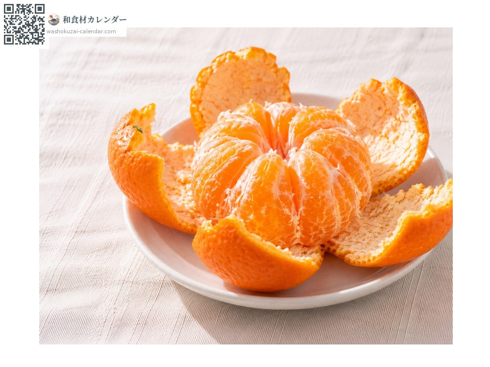
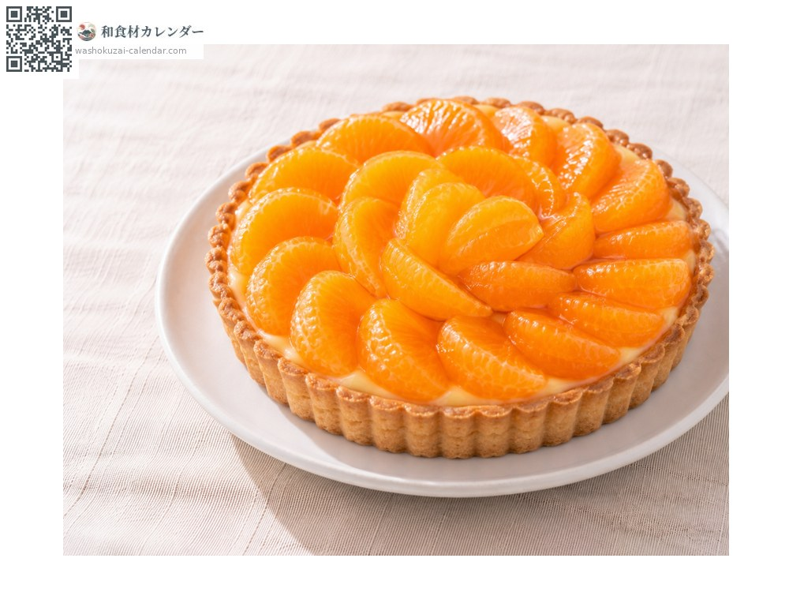
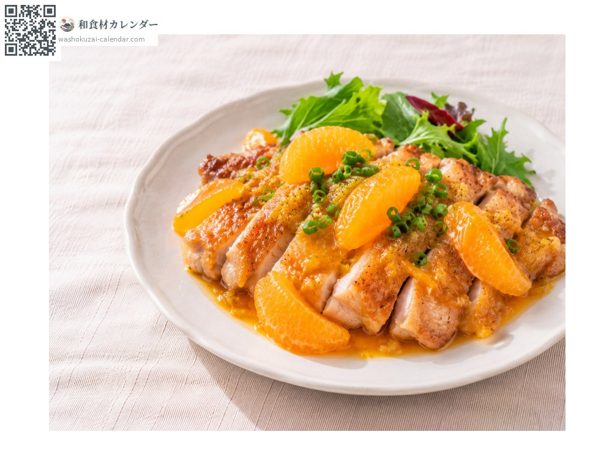
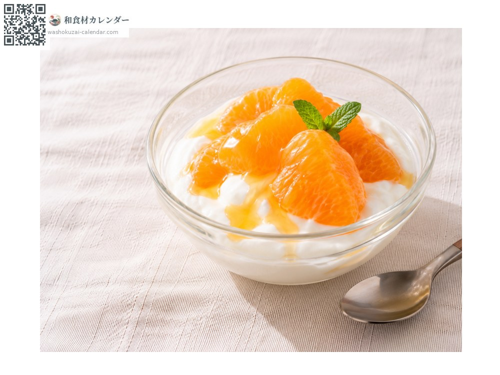

Fruit
Ponkan mandarin
ポンカン ぽんかん ponkan
Also known asponkan, mikan
At its best in Jan, Feb

When it is at its best
Jan
Feb
Mar
Apr
May
Jun
Jul
Aug
Sep
Oct
Nov
Dec
In seasonAvailable
How to cook

Eaten fresh
The loose rind peels off easily by hand; richly fragrant.

Tart
Segments arranged over custard.

Chicken with ponkan sauce
Juice reduced and coated over pan-fried chicken.

Yoghurt
Segments on top with a little honey.
How to choose
A deep orange, fragrant rind that is not too puffy.
Storage
Keep at cool room temperature. The loose rind spoils easily, so eat it soon.
Main areas
Good to know
Thought to come from India, its name is said to derive from the Indian city of Poona. It reached Kagoshima from Taiwan in the Meiji era. It is strongly fragrant and very sweet. It is a parent of Shiranui (Dekopon).